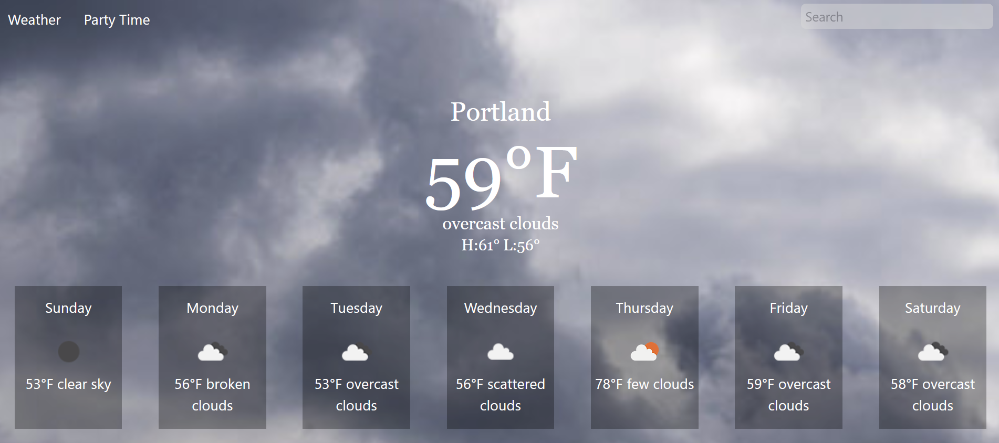
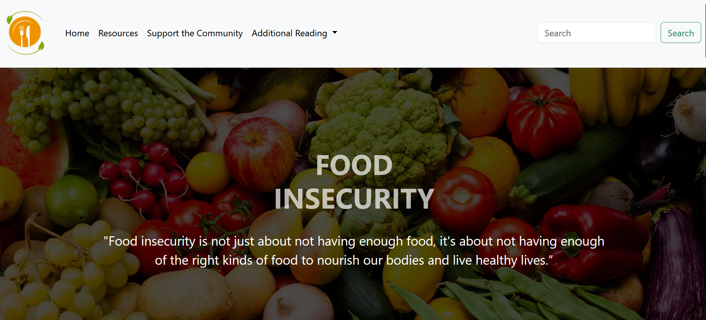

This is a game reminiscent of Overcooked, where players control two ducks tasked with assembling sandwiches while navigating obstacles. The game can be played in both single-player and two-player modes.

Weather Music
This website will suggest a Spotify playlist based on the current weather conditions in a specified city or country. For instance, if it is raining, you will be recommended a sad playlist.

Food For Thought
This website has been developed to promote awareness regarding the problem of food insecurity and to provide information about accessing support for individuals experiencing food insecurity.